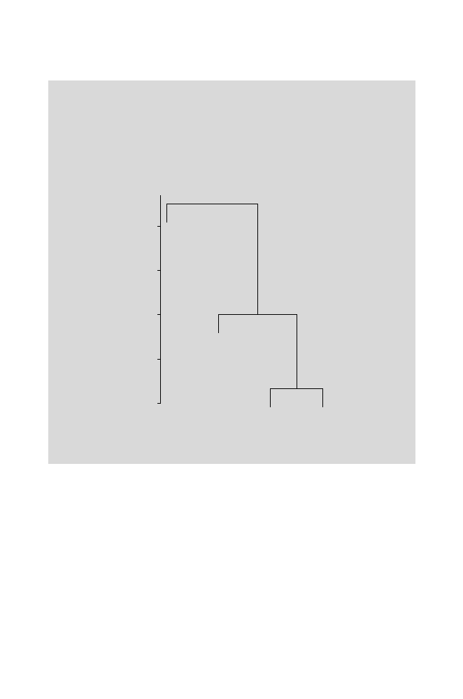

276
10 Similarity, Distance, and Clustering
> plclust(hclust(dapes1,"single"),labels=species,xlab="",
+ sub="")
It is possible to draw the dendrogram with all the leaves extending to the
same level (it has the same meaning: the distances at which OTUs join are
the relevant data). Try
> plclust(hclust(dapes1,"single"),labels=species,xlab="",
+ sub="",hang=-1)
Hy
Go
Pa
Ho
0.06
0.08
0.10
0.12
0.14
Height
Fig. 10.3.
Dendrogram of single-linkage clustering for primate species.
10.4.2 Interpretations and Limitations of Hierarchical Clustering
The example given above is very simple. If we were clustering a much larger
number of OTUs, the question of
number of clusters
will arise. Consider the
dendrogram shown in Fig. 10.4. It seems natural to think that there are three
clusters: AB, CD, and EF. This impression is based upon the long distances
separating these clusters from each other and the observation that each of
the pairs (C and D, for example) are less distant from each other than either
of them is from any other OTU. However, we should recognize that the dis-
tance criterion that we use to define the clusters will determine the number
of clusters assigned. If we set the criterion at distances between 0.4 and 0.3,
we would define two clusters. If instead we focused on distances between 0.3